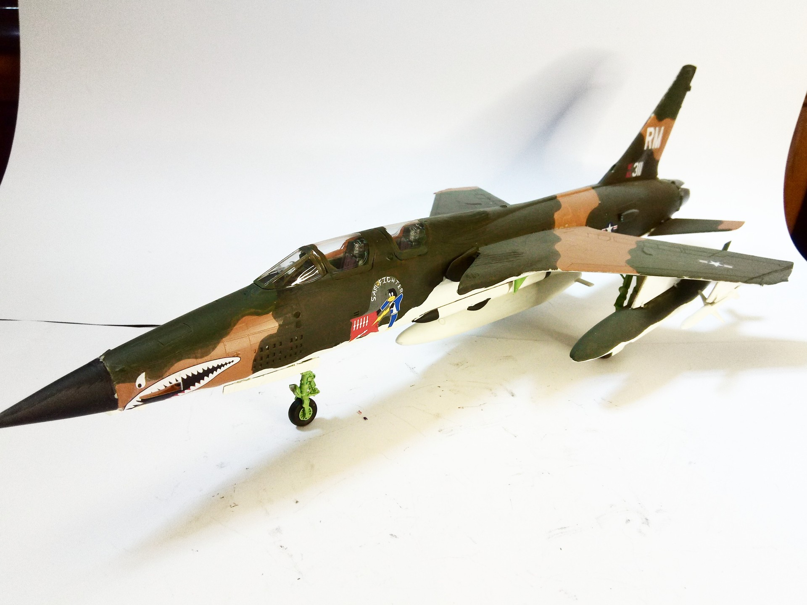

Aerei · scale model archive
Republic F-105G Thunderchief Wild Weasel
Republic F-105G Thunderchief Wild Weasel — Kit: Revell, Scale: 1/72. 35th TFW 562nd TFS George AFB California 1980 #1/48 #Revell #plasticmodel

Photo gallery
English description
35th TFW 562nd TFS George AFB California 1980
#1/48 #Revell #plasticmodel
Descrizione italiana
35th TFW 562nd TFS George AFB California 1980.